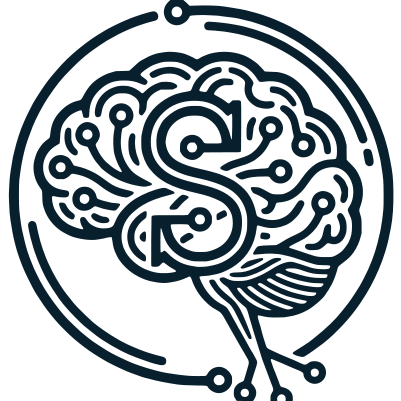

Centro Sinapsis · Ficha para familias
Autismo: cómo anticipar consultas y cambios de rutina
Familias de niñas, niños y adolescentes con TEA
Herramientas que suelen ayudar
Anticipar con tiempo
Contale qué va a pasar unos días antes y recordalo el mismo día. Usá frases cortas y concretas: “Mañana vamos al médico. Te va a mirar los oídos. Después volvemos a casa”.
Apoyos visuales
Una agenda con dibujos o fotos de cada paso (salir, viajar, esperar, consulta, volver) le permite ver la secuencia y saber cuándo termina.
Historias con imágenes
Un relato corto, con fotos del lugar o de la persona que va a ver, ayuda a imaginar la situación antes de vivirla.
Regulación sensorial
Llevá lo que lo calma: auriculares, un juguete, un objeto preferido o algo para morder o apretar. Si el lugar es ruidoso, buscá un rincón más tranquilo.
Un “después” claro
Saber qué viene al terminar (ir a la plaza, su merienda preferida) ayuda a tolerar lo que cuesta.
Antes de una consulta médica
- Avisá al profesional cómo se comunica tu hijo, qué le molesta (ruidos, luces, que lo toquen) y qué lo ayuda.
- Pedí, si se puede, el primer turno o un horario con menos espera.
- Practicá en casa con juegos: revisar los oídos a un muñeco, abrir la boca, subirse a una camilla.
- Llevá algo para la espera y preparate para salir un rato si lo necesita.
Fuentes
- Organización Mundial de la Salud (OMS) — Autismo
- MedlinePlus (Biblioteca Nacional de Medicina de EE.UU.) — Trastorno del espectro autista
Resumen de la guía «Cómo preparar a un niño con autismo para una consulta o un cambio de rutina»: https://sinapsiscentro.com.ar/anticipacion-autismo-cambios-rutina.html